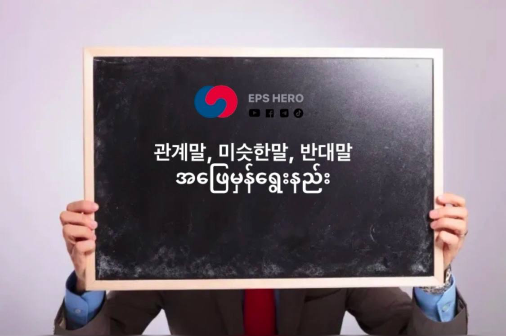

관계말ဆိုတာကတော့ သိတဲ့အတိုင်း ဆက်စပ်တဲ့ စကားလုံးပါ။ မေးခွန်းမှာ စကားလုံး (၃)ခု (၄)ခုလောက်ပေးထားမယ်။ အဖြေမှာ စမ်းတဝါးဝါးဖြစ်စေမယ့် အဖြေ(၄)ခုထဲက အပေါ်ကစကားလုံးတွေနဲ့ဆက်စပ်တဲ့ အဖြေတစ်ခုကိုရွေးရတာပါ။
관계말ကိုဖြေတတ်ဖိုက မခက်ပါဘူးနော်။ ဖြေနည်းlogicကိုသိရင်ရပါတယ်။ အဓိကက မေးခွန်းမှာပေးထားတဲ့ စကားလုံးတွေရဲ့ အဓိပ္ပာယ်ကိုသိရင်ရပါတယ်။ စကားလုံးတွေဟာ ဘယ်နယ်ပယ်ကလာတာလဲဆိုတာကို အရင်စဉ်းစားပါ။ ဥပမာ 버스,기차,지하철,비행기 ဒီလိုစကားလုံးတွေဆိုရင် ကိုယ်ကစဉ်းစားလိုရနေပါပြီ။ ဒါက သွားလာတဲ့နေရာမှာအသုံးပြုတဲ့ယာဉ်တွေဆိုတာကို။ အဲ့တော့ အဖြေမှာ
1. 요리하다
2. 타다
3. 자르다
4. 열다
ဆိုရင် အဖြေမှန်ကလွယ်လွယ်လေးပါ 2. 타다 စီးတာပေါ့။ တခြားဟာ 요리하다တို자르다တိုတွေကအဓိပ္ပာယ်မရှိဘူးလေ။ နောက်ဥပမာတစ်ခုက 공장, 노동자, 기계, 제품ဆိုပါတော့။ ဒါတွေဆိုရင် စက်ရုံနဲ့ဆိုင်တာဆိုတာကို အရင်
စဉ်းစားလိုရပါတယ်။ အဖြေမှာက
1. 주문하다
2. 조립하다
3. 비싸다
4. 출발하다 ပေးထားတယ်ဆိုပါတော့။ ဒါဆိုလွယ်လွယ်လေးပါ။ အဖြေမှန်က 2. 조립하다ပေါ့။ စက်ပစ္စည်းတွေကိုတပ်ဆင်တယ်ပေါ့။ ဘာလိုဆိုအဲ့တစ်ခုပဲ ဆက်စပ်တာရှိတာကို။ နောက်ထပ် ဥပမာတစ်ခုကတော့ 컴퓨터, 문서, 회의, 직원 ။ ဒါကိုစဉ်းစားကြည့်မယ်ဆိုရင် ရုံးနဲ့ဆိုင်တာဖြစ်နေပြီ။ အဖြေတွေက
사무실
병원
은행
편의점 ဆိုပါစို။ အဖြေမှန်က 1. 사무실ပေါ့ဘာလိုဆို အပေါ်ကပေးထားတဲ့စကားလုံးတွေအကုန်လုံးက ရုံးနဲ့ဆိုင်တာတွေချည်းပဲမလိုလေ။
မေးခွန်းမှာရော အဖြေမှာရောမသိတဲ့စကားလုံးတွေပါလာတယ်ဆိုရင် မသက်ဆိုင်လောက်ဘူးလို လုံးဝယူဆလိုရတဲ့ စကားလုံး၂လုံးလောက်ကို ကြိုးစားပြီးစဉ်းစားပါ။ ကျန်တဲ့(၂)ခုထဲက ကိုယ်သိတဲ့ဟာနဲ့ဆက်စပ်တယ်ဆိုရင် ရွေးလိုက်ပါ။
비슷한말ကတော့ တူညီတဲ့ စကားလုံးတွေပဲဖြစ်ပါတယ်။ ပုံမှန်သုံးနေကျစကားလုံးတွေ အလုပ်ခွင်မှာသုံးတဲ့စကားလုံးတွေနဲ့ နေ့စဉ်သုံးတဲ့စကားလုံးတွေကို ကျနော်တိုwebsiteမှာတင်ပေးထားပါ့မယ်။ ဝင်ပြီးလေ့လာလိုရပါတယ်ဗျ။
반대말 ဆိုတာက ဆန့်ကျင်ဘက်စကားပဲဖြစ်ပါတယ်။ ဒါကလည်းလွယ်ပါတယ်။ ကျနော်တိုတွေ စကားလုံးတွေကိုချုံလိုရနိုင်သလောက်ချုံကြည့်ရင် EPSနဲ့ဆိုင်တာက သိပ်မများလှပါဘူး။ ပုံမှန်ပြောနေကျစကားလုံးလေးတွေနဲ့ လုပ်ငန်းခွင်ထဲမှာသုံးတဲ့စကားလုံးလေးတွေသိရင်ကိုရပါတယ်။ အရမ်းအခက်ကြီးတွေကို လိုက်မှတ်မနေပါနဲ့ဗျ။ မေးလည်းမမေးပါဘူး။
ခု linkလေးကိုနှိပ်ပြီး 비슷한말 နဲ့ 반대말တွေကို ကျနော်တို websiteမှာ အလကားလေ့လာလိုရပါမယ်ဗျ။
https://epshero.netlify.app/words
See more...
5 Feb 2025

EPS HERO
관계말, 비슷한말, 반대말 ဖြေရတာ တိုင်ပတ်နေတဲ့သူတွေအတွက် ဖြေနည်းလေးတွေမျှဝေပေးသွားပါမယ်
